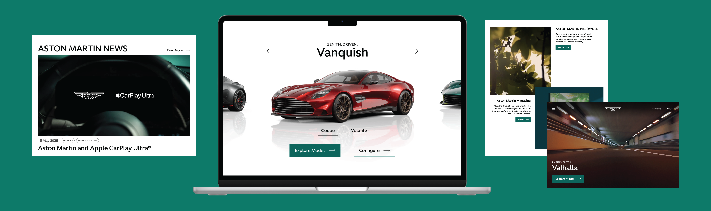

Aston Martin Web Redesign
Design Exercise
Redesigned elements and layout for Aston Martin's landing page to better represent the company's branding.

Role
UX Designer
Tools
Figma
Figjam
Timeline
4 hours
Description
Redesigned and reorganized elements on Aston Martin's Landing page and created new components to modernize the website.
Context
Aston Martin, as a brand, has been very interesting to keep an eye on lately. I think there's a hesitancy to revolutionize the brand because of its storied history. That hesitancy is seen in there product lineup, but also in their digital presence. So, as a design exercise, I wanted to give their landing page a facelift. The goal here was to observe how small changes to the design system and layout could vastly improve the user experience.